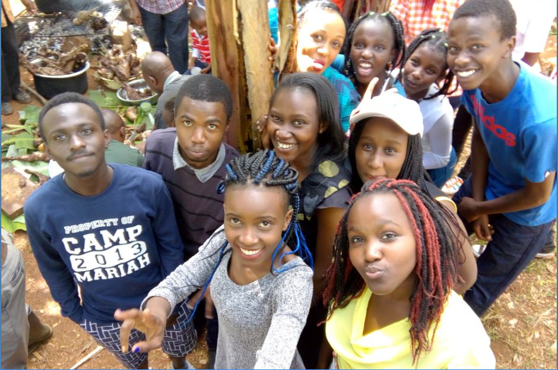

Life is always short, time will never be ready for anyone, chances come once and if they come for a second time, then it isn't in the same circumstance. Look for it, Grab it and Own it. Thats my policy.
Be who you are and say what you feel, because those who mind dont matter and those who matter dont mind.Be willing to go all out, in pursuit of your dream. Ultimately it will pay off. You are more powerful than you think you are.Dont worry what others are doing. Dont at all! There is only one thing that makes a dream impossible to achieve: the fear of failure. You cannot control everything that happens to you; you can only control the way you respond to what happens. In your response is your power. Stay strong. Even when it feels like everything is falling apart. Failure is a prerequisite for great success. If you want to succeed faster, double your rate of failure. Dont make friends who are comfortable to be with. Make friends who will force you to lever yourself up. Dont be pushed by your problems. Be led by your dreams. If you really want to do something you will find a way, if you dont, you will find an excuse. Dont allow your past or present condition to control you. It is just a process that you are going through to get you to the next level. Never forget to say thanks to God for giving you another chance. Thats basically me.
Strive to be Bigger than your Dream
ACHIEVEMENTS
Ever noted that the harder you work smart, the more you achieve your goals. To be an achiever you have to see the bigger picture. It's never about winning and losing only, it's about being resilient come rain come shine. Consistency is key. There are no two ways about it.
Secretary General
2015/2016 SecGen of the Students Association of Jaramogi Oginga Odinga University of Science and Technology (SAJOOUST). During that duration, I had a real good opportunity to sharpen my leadership skills by being the comrades' chosen voice. There were so many challenges to solve especially when it came to balancing between my education and representing comrades. Politics is tough, how I got to that position is by God's mercy and grace. At the beginning it was unimaginable especially when I recalled that so many had discouraged me citing how tribal and dirty politics is. That didnt demoralise me, I wanted to prove them wrong and decided to do my campaign in a whole different way. Thanks to all those who believed in my agenda and voted for me selflessly That's past...I soldier on looking for more opportunities in the future.
Bachelor's Degree
Information Communication Technology...doing that course in JOOUST was the best decision. Im hopeful to graduate around March 23rd 2018. I thank God for that far because He opened the door and 4 yrs down the line He is closing the same door and opening another. Big up to my lecturers who always kept me on my toes even though the journey aint over yet because I may be going back there for a Masters Degree. My classmates...I will surely be missing them, can forget borrowing one another notes, past papers...let me not be too official...we also exchanged movies,series, cracked jokes, argued about politics and obviously about soccer.
Edward Snowden story was the most exciting story in my four years of higher education and I desire to follow his steps.
Photos
National Bank Intern
NBK...never thought one day i would land there. I always prayed for an opportunity to work in a banking company or an I.T firm. I recall how I was so committed to look for an internship position in so many companies until I almost lost hope, then came the call of me reporting to NBK as an ICT intern. God's mercy in work. Here i interacted with some very good brains in the IT field. Network Installation and Troubleshooting, Computer Hardware Repair & Maintenance, Windows Server installation and assigning of the domain were the major jobs that I was given. Definitely in such an institution you get to gain a lot more than u can give. Im really humbled that I came out of there more empowered with I.T. knowledge. I got my eyes wide open looking for a chance to get back there very soon.
ASPIRATIONS
There will be OBSTACLES | There will be DOUBTERS | There will be MISTAKES | But with HARDWORK & FOCUS & PERSISTENCE & PATIENCE....There will be NO LIMITS. You got no shortcuts, you better start working for it as early as now. There are no secrets to achieve all my dreams. They will be as a result of preparation, hardwork and learning from failure.
Politics
Many will say its a dirty game, but did you know everything is political no matter where you are. Barack Obama once said, "We need to reject any politics that targets people because of race or religion. This isn't a matter of political correctness. It's a matter of understanding what makes us strong. The world respects us not just for our arsenal; it respects us for our diversity and our openness and the way we respect every faith." "In politics, nothing happens by accident. If it happens, you can bet it was planned that way,"by Franklin D. Roosevelt.
Computer Maniac
Programming is one of my biggest passions. Its a hard task, because obviously you wont sleep espicially is you make a mistake of forgetting to put a comma, but that wont make me stop from venturing deeper into it. My end game in the computer world is becoming a reliable White-Hacker. I started small and Im slowly making progress. I know this will take time but persistence and patience are key. No hurry in Africa, there are no shortcuts in such fields.
Personal
Personal aspirations regards those issues that will directly affect me and my family. These include my rides, where I'm gonna be living, what I will be doing when Im off from job and any other source of income Im looking forward to setup.
I know so many will not take this seriously because they think Im dreaming, yes I am dreaming but that helps me stay focused and committed to my daily commitments. Any slight progress is a plus for me. Stay positive. Get More Info
FAMILY & FRIENDS
No man is an island, entire of itself; every man is a part of the main. This is where my family and friends come in. Ever thought of a life with no family or friends...that aint possible at all. They are like your backbone, they will always support you even when u least need it.
Mom and Dad
You need a strong family because at the end, they will love you and support you unconditionally. Luckily, I have my dad, mom and brother. One of the greatest titles in the world is parent, and one of the biggest blessings in the world is to have parents to call mom and dad.My parents had a great deal of trouble with me during my childhood days, but I think they enjoyed it. Today I'm proud of the path they showed me.
Get More Info
Big Bro
Everyone knows that if you have got a brother, you are going to fight especially during your childhood days.My brother is one of my true heroes. Brothers are what best friends can never be.The greatest gift my parents ever gave me was my brother SO how do people make it through life without a brother? If you have a brother, you know exactly how important he is to you.Whether you want to admit it or not, thats the truth!
Get More Info

Relatives
Our relatives form the natural setting of our childhood. We understand ourselves best and are best understood by others through the persons who came nearest to us in our earliest years.Nobody has ever before asked the nuclear family to live all by itself in a box. With no relatives, no support, we have put it in an impossible situation. The overwhelming support and concern my relatives give me will always enhance my confidence to achieve more.
Get More Info
Friends
Friends show their love in times of trouble, not in happiness.
Martin Luther King, Jr. ,"In the end, we will remember not the words of our enemies, but the silence of our friends." Friends are the siblings God never gave us. The love of family and the admiration of friends is much more important than wealth and privilege.
Old friends pass away, new friends appear. It's just like the days. An old day passes, a new day arrives. Important thing is to make it meaningful.
Check Their Photos